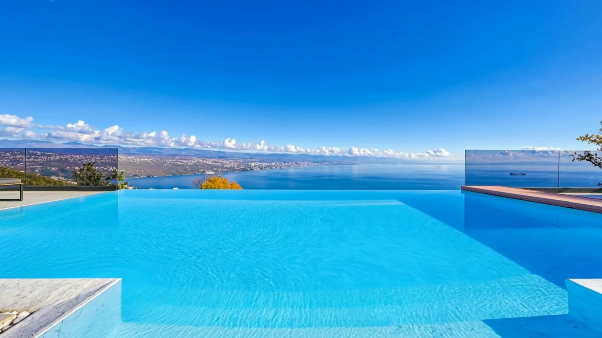
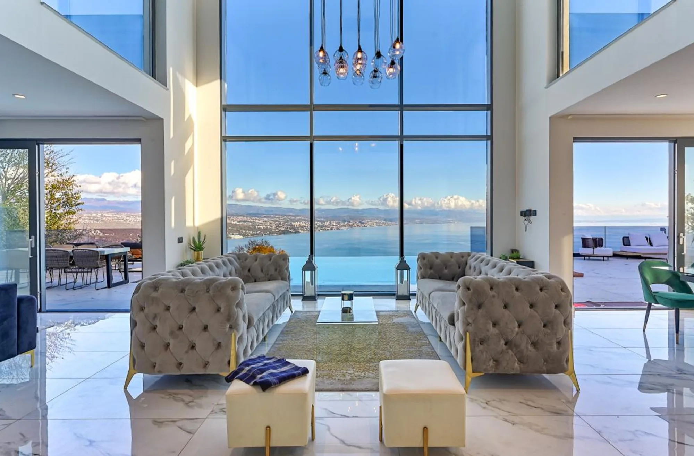
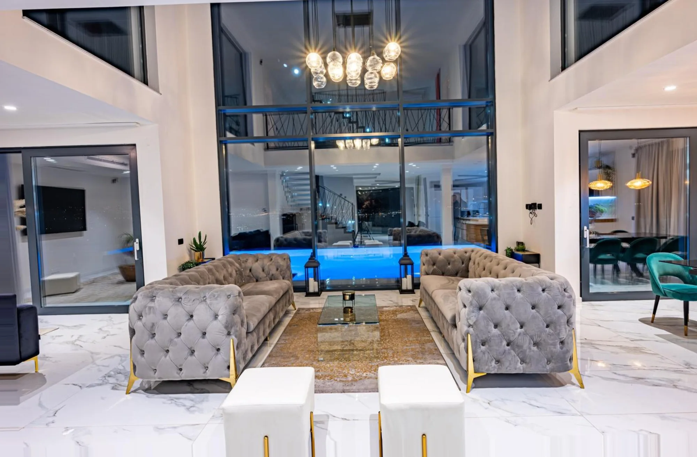

Smaragd
Zid od zelenog baršuna, velika peonija, bakrene lampe. More kroz prozor.
- Krevet
- veliki bračni
- Kupaonica
- vlastita
- Ormar
- walk-in
Kolavići 26, 51414 Veprinac · e-mail

Pet suita, grijani infinity bazen i cijeli Kvarner pod vama.
Pošaljite upitIznad Opatije.Veprinac, na padini Učke
Kuća od stakla i mramora na padini iznad Opatije. Sve u njoj gleda prema moru.


Staklo visoko dva kata, a u njemu cijeli Kvarnerski zaljev.
Kad se upale svjetla, staklo vrati sobu: luster, stubište, galeriju.
Svaka ima veliki bračni krevet, svoju kupaonicu i walk-in ormar. I svaka ima svoju sliku na zidu.
Sve o suitama
Zid od zelenog baršuna, velika peonija, bakrene lampe. More kroz prozor.

Tapecirano uzglavlje, zlatne lampe, parket. Opatija i zaljev pod prozorom.

Ženski portret u cvijeću, ljubičasti mural, baršun i mramor. Izlazi na vrt.

Sivi zidovi s letvicama, zid od brončanog listića, zavjese boje šljive. More preko cijelog zida.

Perunike i peonije preko cijelog zida, sivi baršun, drvo.

Sauna iza stakla, ležaljke i lounge pod nadstrešnicom s velikim muralom, a na terasi whirlpool s pogledom na svjetla Opatije. Bazen grijemo i od listopada do svibnja, na upit.
Wellness u vili

Vila je u Veprincu, na padini Učke. Gore su mir i cijeli zaljev, dolje šetalište, plaže i kavane.

10na Bookingu, 3 recenzije
4,83na Airbnbu, 30 recenzija
“The facility was great, the pool was perfect and the accommodations fit our family perfectly.”
Scott, SAD · Booking.com